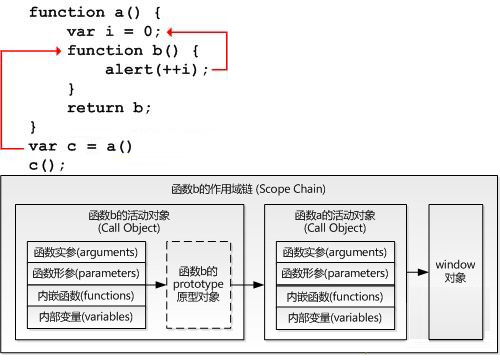

如果你对javascript闭包还不是很理解，那么请看下面转载的文章：(转载:http://www.felixwoo.com/archives/247)
一、什么是闭包？
官方”的解释是：闭包是一个拥有许多变量和绑定了这些变量的环境的表达式（通常是一个函数），因而这些变量也是该表达式的一部分。
相信很少有人能直接看懂这句话，因为他描述的太学术。其实这句话通俗的来说就是：JavaScript中所有的function都是一个闭包。不过一般来说，嵌套的function所产生的闭包更为强大，也是大部分时候我们所谓的“闭包”。看下面这段代码：
function a() {
var i = 0;
function b() { alert(++i); }
return b;
}
var c = a();
c();
这段代码有两个特点：
1、函数b嵌套在函数a内部；
2、函数a返回函数b。
引用关系如图：
这样在执行完var c=a()后，变量c实际上是指向了函数b，再执行c()后就会弹出一个窗口显示i的值(第一次为1)。这段代码其实就创建了一个闭包，为什么？因为函数a外的变量c引用了函数a内的函数b，就是说：
当函数a的内部函数b被函数a外的一个变量引用的时候，就创建了一个闭包。
让我们说的更透彻一些。所谓“闭包”，就是在构造函数体内定义另外的函数作为目标对象的方法函数，而这个对象的方法函数反过来引用外层函数体中的临时变量。这使得只要目标 对象在生存期内始终能保持其方法，就能间接保持原构造函数体当时用到的临时变量值。尽管最开始的构造函数调用已经结束，临时变量的名称也都消失了，但在目 标对象的方法内却始终能引用到该变量的值，而且该值只能通这种方法来访问。即使再次调用相同的构造函数，但只会生成新对象和方法，新的临时变量只是对应新 的值，和上次那次调用的是各自独立的。
二、闭包有什么作用？
简而言之，闭包的作用就是在a执行完并返回后，闭包使得Javascript的垃圾回收机制GC不会收回a所占用的资源，因为a的内部函数b的执行需要依赖a中的变量。这是对闭包作用的非常直白的描述，不专业也不严谨，但大概意思就是这样，理解闭包需要循序渐进的过程。
在上面的例子中，由于闭包的存在使得函数a返回后，a中的i始终存在，这样每次执行c()，i都是自加1后alert出i的值。
那 么我们来想象另一种情况，如果a返回的不是函数b，情况就完全不同了。因为a执行完后，b没有被返回给a的外界，只是被a所引用，而此时a也只会被b引 用，因此函数a和b互相引用但又不被外界打扰(被外界引用)，函数a和b就会被GC回收。(关于Javascript的垃圾回收机制将在后面详细介绍)
三、闭包内的微观世界
如果要更加深入的了解闭包以及函数a和嵌套函数b的关系，我们需要引入另外几个概念：函数的执行环境(excution context)、活动对象(call object)、作用域(scope)、作用域链(scope chain)。以函数a从定义到执行的过程为例阐述这几个概念。
到此，整个函数a从定义到执行的步骤就完成了。此时a返回函数b的引用给c，又函数b的作用域链包含了对函数a的活动对象的引用，也就是说b可以访问到a中定义的所有变量和函数。函数b被c引用，函数b又依赖函数a，因此函数a在返回后不会被GC回收。
当函数b执行的时候亦会像以上步骤一样。因此，执行时b的作用域链包含了3个对象：b的活动对象、a的活动对象和window对象，如下图所示：

如图所示，当在函数b中访问一个变量的时候，搜索顺序是：
小结，本段中提到了两个重要的词语：函数的定义与执行。文中提到函数的作用域是在定义函数时候就已经确定，而不是在执行的时候确定（参看步骤1和3）。用一段代码来说明这个问题：
function f(x) {
var g = function () { return x; }
return g;
}
var h = f(1);
alert(h());
这段代码中变量h指向了f中的那个匿名函数(由g返回)。
如果第一种假设成立，那输出值就是undefined；如果第二种假设成立，输出值则为1。
运行结果证明了第2个假设是正确的，说明函数的作用域确实是在定义这个函数的时候就已经确定了。
四、闭包的应用场景
保护函数内的变量安全。以最开始的例子为例，函数a中i只有函数b才能访问，而无法通过其他途径访问到，因此保护了i的安全性。
function Constructor(...) {
var that = this;
var membername = value;
function membername(...) {...}
}
以上3点是闭包最基本的应用场景，很多经典案例都源于此。
五、Javascript的垃圾回收机制
在Javascript中，如果一个对象不再被引用，那么这个对象就会被GC回收。如果两个对象互相引用，而不再被第3者所引用，那么这两个互相引用的对象也会被回收。因为函数a被b引用，b又被a外的c引用，这就是为什么函数a执行后不会被回收的原因。
六、结语
理解JavaScript的闭包是迈向高级JS程序员的必经之路，理解了其解释和运行机制才能写出更为安全和优雅的代码。